Cálculo do custo do Sub-Produto
Para realização da demonstração do cáculo, iremos criar uma Ordem de produção
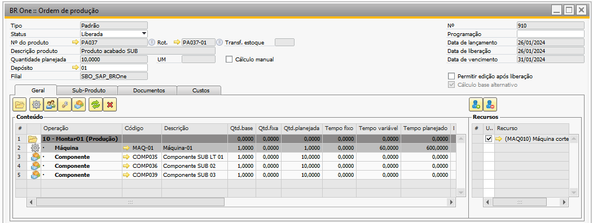{kind=link}
Realizado a configuração de 2 Sub-Produto na Aba Sub-Produto:
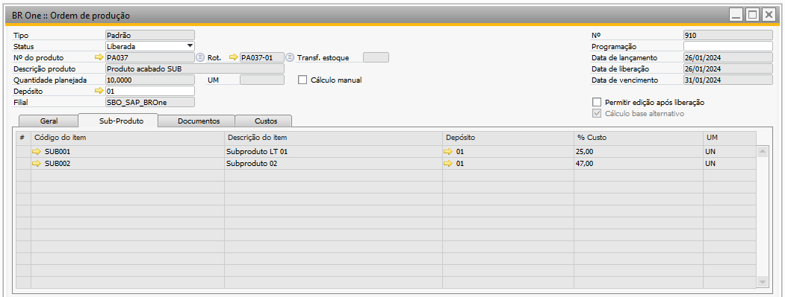{kind=link}
Na Ordem de Produção para encontrar o custo do PA e do Sub-Produto é preciso saber o custo dos componentes.
Custo dos componentes que compõem o PA
Componente COMP035: Custo unitário R$ 100,00
{kind=link}
Componente COMP036: Custo unitário R$ 100,00
{kind=link}
Componente COMP039: Custo unitário R$ 100,00
{kind=link}
Nesse exemplo o custo total dos componentes para quantidade planejada do PA será:
Custo total dos componentes para produção da OP = Quantidade planejada do componente * Custo unitário do componente
Custo total dos componentes para produção da OP = 10 * 300,00
Custo total dos componentes para produção da OP = 3.000,00
Na Ordem de Produção para encontrar o custo do PA e do Sub-Produto é preciso saber o custo dos recusrsos do GGF antecipado, caso esteja habilitado.
Custo Hora dos Recursos por PA
Recurso Maquina: Custo Hora 50,00
{kind=link}
Nesse exemplo o custo total dos recursos para a quantidade planejada do PA será:
Custo total dos recursos para produção da OP = Tempo planejado do recurso em horas * o custo hora do recurso
Custo total dos recursos para produção da OP = (600/60) * 50,00
Custo total dos recursos para produção da OP = 10 * 50,00
Custo total dos recursos para produção da OP = 500,00
Para recuperação do custo do Sub-Produto, também é levado em consideração os parâmetros das configurações de produção na aba Entrada de PA
Para acessar as Configurações de produção é necessário ir no menu:
Administração -> Definição -> Produção -> Configurações de produção
Configurações de Produção - Aba Entrada de PA:
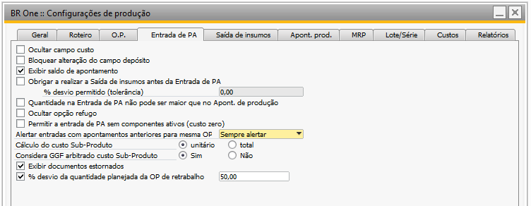{kind=link}
A primeira combinação dos parâmetros para realização do cálculo é:
Cálculo do custo Sub-Produto = Unitário
Considera GGF antecipado custo Sub-Produto = Sim
Na Ordem de produção do PA com quantidade planejada de 10, foi realizado uma entrada de 2 PAs
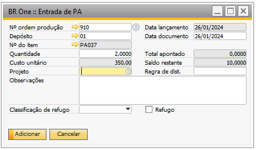{kind=link}
Foram informados a quantidade dos Sub-Produtos
SUB001: Quantidade 3
SUB002: Quantidade 2
{kind=link}
Para encontrar o custo do primeiro item SUB001 para essa configuração é utilizado a seguinte fórmula:
Custo Unitário Sub-Produto = (((Custo total dos componentes planejado) + (Custo total do recurso planejado)) / (Quantidade Total Planejada do Produto Acabado)) * (Percentual de custo definido para o Sub-Produto)
Custo Unitário Sub-Produto = ((3.000 + 500) / 10) * 0,25
Custo Unitário Sub-Produto = (3.500 / 10) * 0,25
Custo Unitário Sub-Produto = 350,00 * 0,25
Custo Unitário Sub-Produto = 87,50
Após encontrado o custo unitário, o custo total será de acordo com a fórmula abaixo:
Custo total do Sub-Produto = Custo Unitário Sub-Produto * Quantidade apontada para o Sub-Produto
Custo total do Sub-Produto = 87,50 *3
Custo total do Sub-Produto = 262,50
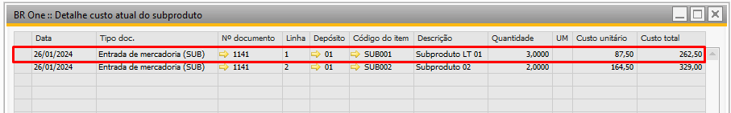{kind=link}
Para encontrar o custo do segundo item SUB002 para essa configuração é utilizado a seguinte fórmula:
Custo Unitário Sub-Produto = (((Custo total dos componentes planejado) + (Custo total do recurso planejado)) / (Quantidade Total Planejada do Produto Acabado)) * (Percentual de custo definido para o Sub-Produto)
Custo Unitário Sub-Produto = ((3.000 + 500) / 10) * 0,47
Custo Unitário Sub-Produto = (3.500 / 10) * 0,47
Custo Unitário Sub-Produto = 164,50
Após encontrado o custo unitário, o custo total será de acordo com a fórmula abaixo:
Custo total do Sub-Produto = Custo Unitário Sub-Produto * Quantidade apontada para o Sub-Produto
Custo total do Sub-Produto = 164,50 * 2
Custo total do Sub-Produto = 329,00
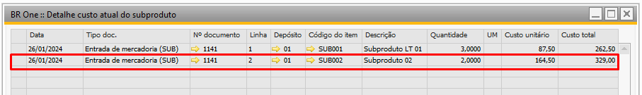{kind=link}
O custo unitario do PA nessa configuração será:
Custo do PA = (Soma do Custo dos Recursos por unidade de PA) + (soma do custo dos componentes por unidade de PA)
Custo unitário do PA = 50 + 300,00
Custo unitário do PA = 350,00
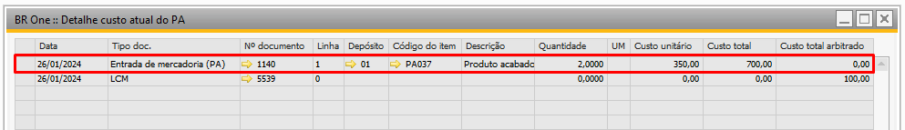{kind=link}
Configurações de Produção - Aba Entrada de PA:
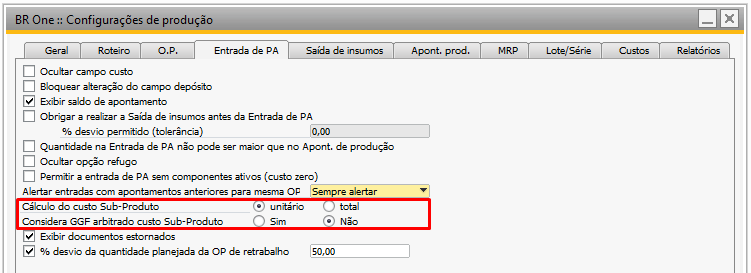{kind=link}
A segunda combinação dos parâmetros para realização do cálculo é:
Cálculo do custo Sub-Produto = Unitário
Considera GGF antecipado custo Sub-Produto = Não
Na Ordem de produção do PA com quantidade planejada de 10, foi realizado uma entrada de 2 PAs
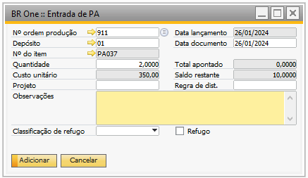{kind=link}
Foram informados a quantidade dos Sub-Produtos
SUB001: Quantidade 3
SUB002: Quantidade 2
{kind=link}
Para encontrar o custo do primeiro item SUB001 para essa configuração é utilizado a seguinte fórmula:
Custo Unitário Sub-Produto = (((Custo total dos componentes planejado) + (Custo total do recurso planejado)) / (Quantidade Total Planejada do Produto Acabado)) * (Percentual de custo definido para o Sub-Produto)
Custo Unitário Sub-Produto = (3.000/10) *0,25
Custo Unitário Sub-Produto = 300,00 *0,25
Custo Unitário Sub-Produto = 75,00
Após encontrado o custo unitário, o custo total será de acordo com a fórmula abaixo:
Custo total do Sub-Produto = Custo Unitário Sub-Produto * Quantidade apontada para o Sub-Produto
Custo total do Sub-Produto = 75,00 * 3
Custo total do Sub-Produto = 225,00
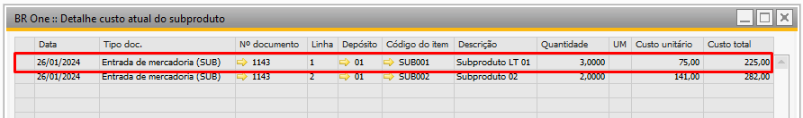{kind=link}
Para encontrar o custo do segundo item SUB002 para essa configuração é utilizado a seguinte fórmula:
Custo Unitário Sub-Produto = (((Custo total dos componentes planejado) + (Custo total do recurso planejado)) / (Quantidade Total Planejada do Produto Acabado)) * (Percentual de custo definido para o Sub-Produto)
Custo Unitário Sub-Produto = (3.000/10) * 0,47
Custo Unitário Sub-Produto = 300,00 * 0,47
Custo Unitário Sub-Produto = 141,00
Após encontrado o custo unitário, o custo total será de acordo com a fórmula abaixo:
Custo total do Sub-Produto = Custo Unitário Sub-Produto * Quantidade apontada para o Sub-Produto
Custo total do Sub-Produto = 141,00 * 2
Custo total do Sub-Produto = 282,00
{kind=link}
O custo unitario do PA nessa configuração será:
Custo do PA = (Soma do Custo dos Recursos por unidade de PA) + (soma do custo dos componentes por unidade de PA)
Custo unitário do PA = 50,00 + 300,00
Custo unitário do PA = 350,00
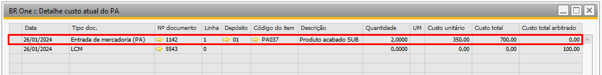{kind=link}
Configurações de Produção - Aba Entrada de PA:
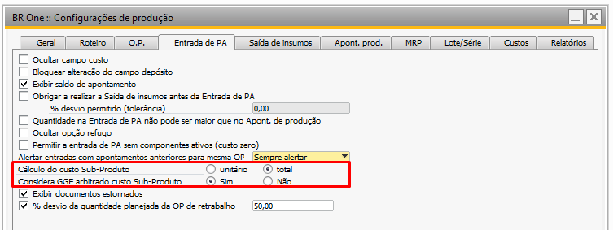{kind=link}
A terceira combinação dos parâmetros para realização do cálculo é:
Cálculo do custo Sub-Produto = Total
Considera GGF antecipado custo Sub-Produto = Sim
Na Ordem de produção do PA com quantidade planejada de 10, foi realizado uma entrada de 2 PAs
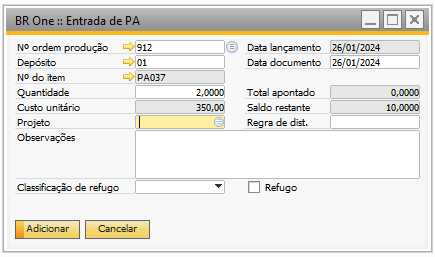{kind=link}
Foram informados a quantidade dos Sub-Produtos
SUB001: Quantidade 3
SUB002: Quantidade 2
{kind=link}
Para encontrar o custo do primeiro item SUB001 para essa configuração é utilizado a seguinte fórmula:
Custo total Sub-Produto = Quantidade apontada do PA * (Soma do custo dos componentes por unidade de PA + Soma dos custos dos recursos por unidades de PA) * %Custo
Custo total do Sub-Produto = 2 * (300 + 50) * %0,25
Custo total do Sub-Produto = 2 * 350 *0,25
Custo total do Sub-Produto = 175,00
Após encontrado o custo total, o custo unitário será de acordo com a fórmula abaixo:
Custo Unitário Sub-Produto = Custo total do Sub-Produto / Quantidade apontada para o Sub-Produto
Custo Unitário Sub-Produto = 175,00 / 3
Custo Unitário Sub-Produto = 58,33
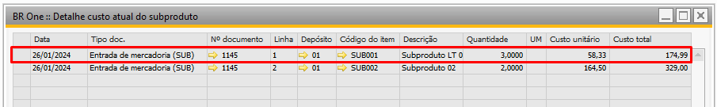{kind=link}
Para encontrar o custo do segundo item SUB002 para essa configuração é utilizado a seguinte fórmula:
Custo total Sub-Produto = Quantidade apontada do PA * (Soma do custo dos componentes por unidade de PA + Soma dos custos dos recursos por unidades de PA) * %Custo
Custo total do Sub-Produto = 2 * (300+50) * 0,47
Custo total do Sub-Produto = 2 * 350 * 0,47
Custo total do Sub-Produto = 700,00 * 0,47
Custo total do Sub-Produto = 329,00
Após encontrado o custo total, o custo unitário será de acordo com a fórmula abaixo:
Custo Unitário Sub-Produto = Custo total do Sub-Produto / Quantidade apontada para o Sub-Produto
Custo Unitário Sub-Produto = 329,00 / 2
Custo Unitário Sub-Produto = 164,50
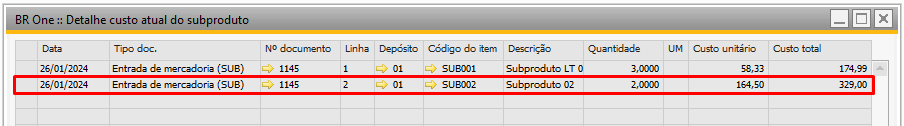{kind=link}
IMPORTANTE: Nessa configuração, após encontrado o custo do Sub-Produto esse valor é abatido do custo do PA.
O custo unitario do PA nessa configuração será:
Custo do PA = ((Quantidade apontada do PA * (Soma do Custo dos Recursos por unidade de PA) + (soma do custo dos componentes por unidade de PA)) – (soma dos totais do Sub-Produto)) / Quantidade apontada do PA
Custo unitário do PA = ((2 * (50 + 300)) – (329+175)) /2
Custo unitário do PA = ((2 * 350) – 504) /2
Custo unitário do PA = (700 - 504) /2
Custo unitário do PA = 196 / 2
Custo unitário do PA = 98,00
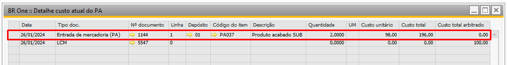{kind=link}
Configurações de Produção - Aba Entrada de PA:
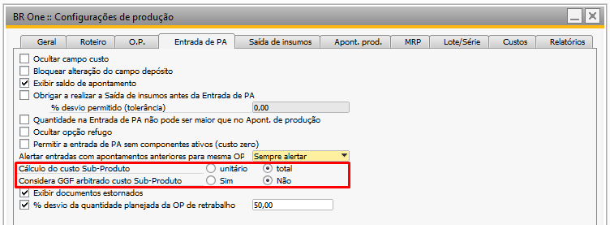{kind=link}
A quarta combinação dos parâmetros para realização do cálculo é:
Cálculo do custo Sub-Produto = Total
Considera GGF antecipado custo Sub-Produto = Não
Na Ordem de produção do PA com quantidade planejada de 10, foi realizado uma entrada de 2 PAs
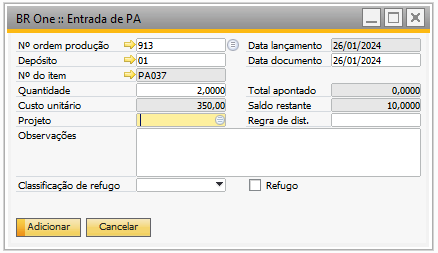{kind=link}
Foram informados a quantidade dos Sub-Produtos
SUB001 Quantidade 3
SUB002 Quantidade 2
{kind=link}
Para encontrar o custo do primeiro item SUB001 para essa configuração é utilizado a seguinte fórmula:
Custo total Sub-Produto = Quantidade apontada do PA * (Soma do custo dos componentes por unidade de PA) * %Custo
Custo total do Sub-Produto = 2 * 300,00 * 0,25
Custo total do Sub-Produto = 150,00
Após encontrado o custo total, o custo unitário será de acordo com a fórmula abaixo:
Custo Unitário Sub-Produto = Custo total do Sub-Produto / Quantidade apontada para o Sub-Produto
Custo Unitário Sub-Produto = 150 / 3
Custo Unitário Sub-Produto = 50,00
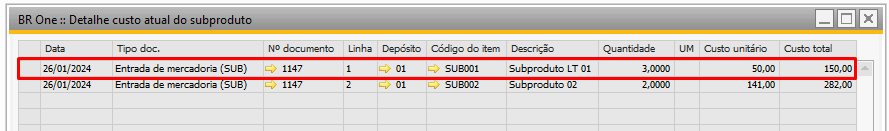{kind=link}
Para encontrar o custo do segundo item SUB002 para essa configuração é utilizado a seguinte fórmula:
Custo total Sub-Produto = Quantidade apontada do PA * (Soma do custo dos componentes por unidade de PA) * %Custo
Custo total do Sub-Produto = 2 * 300,00 * 0,47
Custo total do Sub-Produto = 282,00
Após encontrado o custo total, o custo unitário será de acordo com a fórmula abaixo:
Custo Unitário Sub-Produto = Custo total do Sub-Produto / Quantidade apontada para o Sub-Produto
Custo Unitário Sub-Produto = 282 / 2
Custo Unitário Sub-Produto = 141,00
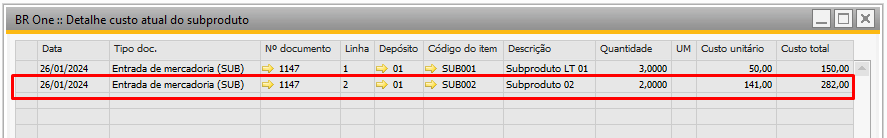{kind=link}
IMPORTANTE: Nessa configuração, após encontrado o custo do Sub-Produto esse valor é abatido do custo do PA.
O custo unitario do PA nessa configuração será:
Custo do PA = ((Quantidade apontada do PA * (Soma do Custo dos Recursos por unidade de PA) + (soma do custo dos componentes por unidade de PA)) – (soma dos totais do Sub-Produto)) / Quantidade apontada do PA
Custo unitário do PA = ((2 * (50,00 + 300,00)) – (150,00 + 282,00 )) /2
Custo unitário do PA = ((2 * 350,00) – 432,00) / 2
Custo unitário do PA = (700,00 -432,00) / 2
Custo unitário do PA = 268,00 / 2
Custo unitário do PA = 134,00
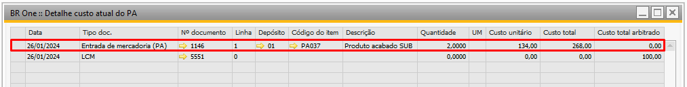{kind=link}